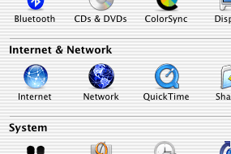
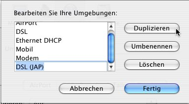
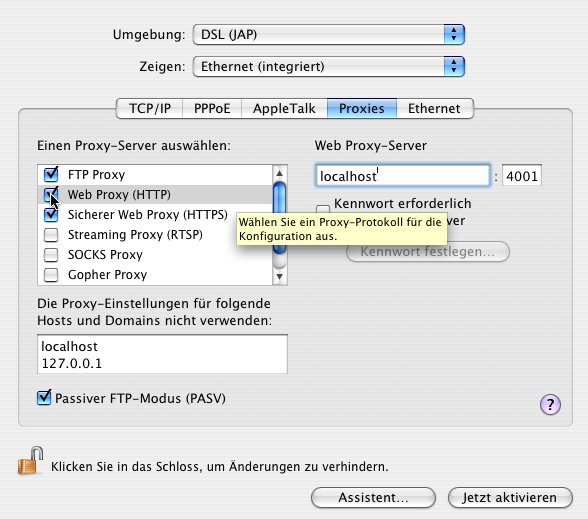

Alternative browser configuration
TOC
Alternative browser configuration
TOC  Browser setup
Alternative
browser configuration Alternative browser configuration
Browser setup
Alternative
browser configuration Alternative browser configuration
Proxy settings: Safari
JonDos recommends the preconfigured, portable JonDoFox for secure anonymous web
browsing. It is available as a complete browser (Windows) or as a Firefox
profile for all operating systems.
If you prefer to configure Safari, do the following:
Proxy settings cannot be entered directly in the standard Mac OS X
browser, Safari. Instead, the proxy must be changed in the network system
settings. The following describes how to set up a new network location in
order to provide simple switching between JonDo and standard, non-anonymous
browsing.
To set up JonDo for Safari, do the following steps:
1.) Choose the apple from the menu bar, then "System Preferences".

2.) In the window that appears, click on "Network" in the "Internet &
Network" group.

3.) Now, in the "Location" field, click on "Edit Locations...".

4.) Choose the location with which you usually connect to the internet. In
this example, the location is called "DSL". Click on "Copy". Rename this new
copy so that you can recognize it later. In this example, the renamed
location is called "DSL (JonDo)". Then click on "Finished".

5.) Now choose the location you just created. In the field "Show", choose the
network device with which you make the connection to the internet. In the
example, it's called "Ethernet (integrated)".
Now click on "Proxies". In the list "Choose a proxy server", check the boxes
for "FTP Proxy", "Web Proxy", and "Secure Web Proxy". Each time you check one
of these boxes, enter "localhost" and "4001" into the fields on the right
side.
Finally, enter "localhost" and "127.0.0.1" into the text box below "Do not
use proxy settings for the following hosts and domains".
When you've finished entering these settings, click on "Activate now" to
change to the newly created location and use JonDo as a proxy in Safari.

In case you want to specify addresses where JonDo shall not be used, you can
enter them in the lower left field.
Note: If you set a different listen port in
JonDo, you'll have to enter this port here too, rather than "4001".
If you no longer want to use JonDo, you can change to the old network
location using the apple menu as previously described.
Alternative browser configuration
TOC Browser setup
Alternative
browser configuration Alternative browser configuration